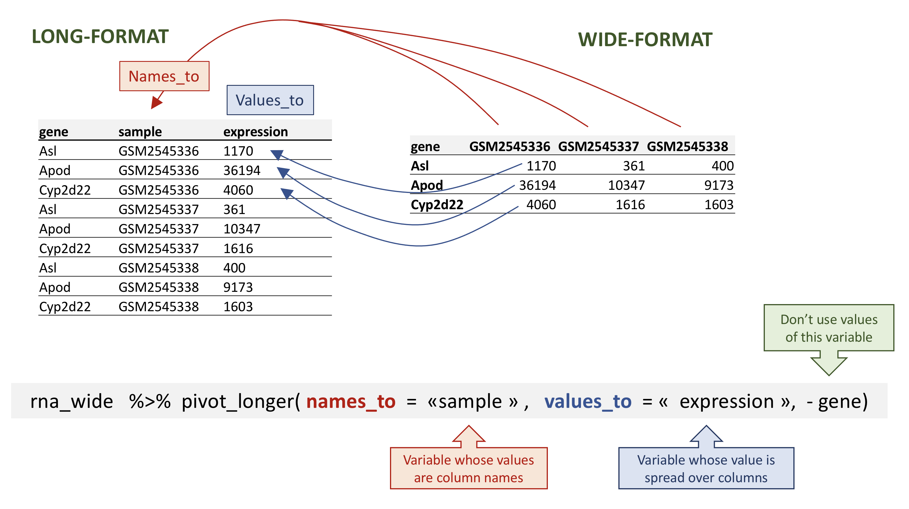
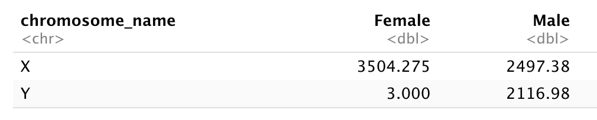

Describe the purpose of the dplyr and tidyr packages.
Describe several of their functions that are extremely useful to manipulate data.
Describe the concept of a wide and a long table format, and see how to reshape a data frame from one format to the other one.
Demonstrate how to join tables.
1Data manipulation using dplyr and tidyr
Bracket subsetting is handy, but it can be cumbersome and difficult to read, especially for complicated operations.
Some packages can greatly facilitate our task when we manipulate data. Packages in R are basically sets of additional functions that let you do more stuff. The functions we’ve been using so far, like str() or data.frame(), come built into R; Loading packages can give you access to other specific functions. Before you use a package for the first time you need to install it on your machine, and then you should import it in every subsequent R session when you need it.
The package dplyr provides powerful tools for data manipulation tasks. It is built to work directly with data frames, with many manipulation tasks optimised.
As we will see latter on, sometimes we want a data frame to be reshaped to be able to do some specific analyses or for visualisation. The package tidyr addresses this common problem of reshaping data and provides tools for manipulating data in a tidy way.
The tidyverse package is an “umbrella-package” that installs several useful packages for data analysis which work well together, such as tidyr, dplyr, ggplot2, tibble, etc. These packages help us to work and interact with the data. They allow us to do many things with your data, such as subsetting, transforming, visualising, etc.
If you did the set up, you should have already installed the tidyverse package. Check to see if you have it by trying to load in from the library:
## load the tidyverse packages, incl. dplyrlibrary("tidyverse")
── Attaching core tidyverse packages ──────────────────────── tidyverse 2.0.0 ──
✔ dplyr 1.1.4 ✔ readr 2.1.5
✔ forcats 1.0.0 ✔ stringr 1.5.1
✔ ggplot2 3.5.1 ✔ tibble 3.2.1
✔ lubridate 1.9.3 ✔ tidyr 1.3.1
✔ purrr 1.0.2
── Conflicts ────────────────────────────────────────── tidyverse_conflicts() ──
✖ dplyr::filter() masks stats::filter()
✖ dplyr::lag() masks stats::lag()
ℹ Use the conflicted package (<http://conflicted.r-lib.org/>) to force all conflicts to become errors
If you got an error message there is no package called ‘tidyverse’ then you have not installed the package yet for this version of R. To install the tidyverse package type:
BiocManager::install("tidyverse")
If you had to install the tidyverse package, do not forget to load it in this R session by using the library() command above!
1.1Loading data with tidyverse
Instead of read.csv(), we will read in our data using the read_csv() function (notice the _ instead of the .), from the tidyverse package readr.
rna <-read_csv("data/rnaseq.csv")
Rows: 32428 Columns: 19
── Column specification ────────────────────────────────────────────────────────
Delimiter: ","
chr (14): gene, sample, organism, sex, infection, strain, tissue, product, e...
dbl (5): expression, age, time, mouse, ENTREZID
ℹ Use `spec()` to retrieve the full column specification for this data.
ℹ Specify the column types or set `show_col_types = FALSE` to quiet this message.
Notice that the class of the data is now referred to as a “tibble”.
Tibbles tweak some of the behaviors of the data frame objects we introduced in the previously. The data structure is very similar to a data frame. For our purposes the only differences are that:
It displays the data type of each column under its name. Note that <dbl> is a data type defined to hold numeric values with decimal points.
It only prints the first few rows of data and only as many columns as fit on one screen.
We are now going to learn some of the most common dplyr functions:
select(): subset columns
filter(): subset rows on conditions
mutate(): create new columns by using information from other columns
group_by() and summarise(): create summary statistics on grouped data
arrange(): sort results
count(): count discrete values
1.2Selecting columns and filtering rows
To select columns of a data frame, use select(). The first argument to this function is the data frame (rna), and the subsequent arguments are the columns to keep.
Now let’s imagine we are interested in the human homologs of the mouse genes analysed in this dataset. This information can be found in the last column of the rna tibble, named hsapiens_homolog_associated_gene_name. To visualise it easily, we will create a new table containing just the 2 columns gene and hsapiens_homolog_associated_gene_name.
If we want to keep only mouse genes that have a human homolog, we can insert a “!” symbol that negates the result, so we’re asking for every row where hsapiens_homolog_associated_gene_name is not an NA.
This is readable, but can clutter up your workspace with lots of intermediate objects that you have to name individually. With multiple steps, that can be hard to keep track of.
You can also nest functions (i.e. one function inside of another), like this:
rna3 <-select(filter(rna, sex =="Male"), gene, sample, tissue, expression)rna3
This is handy, but can be difficult to read if too many functions are nested, as R evaluates the expression from the inside out (in this case, filtering, then selecting).
The last option, pipes, are a recent addition to R. Pipes let you take the output of one function and send it directly to the next, which is useful when you need to do many things to the same dataset.
Pipes in R look like %>% (made available via the magrittr package) or |> (through base R). If you use RStudio, you can type the pipe with Ctrl + Shift + M if you have a PC or Cmd + Shift + M if you have a Mac.
In the above code, we use the pipe to send the rna dataset first through filter() to keep rows where sex is Male, then through select() to keep only the gene, sample, tissue, and expressioncolumns.
The pipe %>% takes the object on its left and passes it directly as the first argument to the function on its right, we don’t need to explicitly include the data frame as an argument to the filter() and select() functions any more.
Some may find it helpful to read the pipe like the word “then”. For instance, in the above example, we took the data frame rna, then we filtered for rows with sex == "Male", then we selected columns gene, sample, tissue, and expression.
The dplyr functions by themselves are somewhat simple, but by combining them into linear workflows with the pipe, we can accomplish more complex manipulations of data frames.
If we want to create a new object with this smaller version of the data, we can assign it a new name:
Using pipes, subset the rna data to keep observations in female mice at time 0, where the gene has an expression higher than 50000, and retain only the columns gene, sample, time, expression and age.
1.4Mutate
Frequently you’ll want to create new columns based on the values of existing columns, for example to do unit conversions, or to find the ratio of values in two columns. For this we’ll use mutate().
To create a new column of time in hours:
rna %>%mutate(time_hours = time *24) %>%select(time, time_hours)
Create a new data frame from the rna data that meets the following criteria: contains only the gene, chromosome_name, phenotype_description, sample, and expression columns. The expression values should be log-transformed. This data frame must only contain genes located on sex chromosomes, associated with a phenotype_description, and with a log expression higher than 5.
Hint: think about how the commands should be ordered to produce this data frame!
1.5Split-apply-combine data analysis
Many data analysis tasks can be approached using the split-apply-combine paradigm: split the data into groups, apply some analysis to each group, and then combine the results. dplyr makes this very easy through the use of the group_by() function.
The group_by() function doesn’t perform any data processing, it groups the data into subsets: in the example above, our initial tibble of 32428 observations is split into 1474 groups based on the gene variable.
We could similarly decide to group the tibble by the samples:
Here our initial tibble of 32428 observations is split into 22 groups based on the sample variable.
Once the data has been grouped, subsequent operations will be applied on each group independently.
1.6 The summarise() function
group_by() is often used together with summarise(), which collapses each group into a single-row summary of that group.
group_by() takes as arguments the column names that contain the categorical variables for which you want to calculate the summary statistics. So to compute the mean expression by gene:
Once the data is grouped, you can also summarise multiple variables at the same time (and not necessarily on the same variable). For instance, we could add a column indicating the median expression by gene and by condition:
Calculate the mean expression level of gene “Dok3” by timepoints.
1.7 Counting
When working with data, we often want to know the number of observations found for each factor or combination of factors. For this task, dplyr provides count(). For example, if we wanted to count the number of rows of data for each infected and non-infected samples, we would do:
rna %>%count(infection)
# A tibble: 2 × 2
infection n
<chr> <int>
1 InfluenzaA 22110
2 NonInfected 10318
The count() function is shorthand for something we’ve already seen: grouping by a variable, and summarising it by counting the number of observations in that group. In other words, rna %>% count(infection) is equivalent to:
rna %>%group_by(infection) %>%summarise(n =n())
# A tibble: 2 × 2
infection n
<chr> <int>
1 InfluenzaA 22110
2 NonInfected 10318
The previous example shows the use of count() to count the number of rows/observations for one factor (i.e., infection). If we wanted to count a combination of factors, such as infection and time, we would specify the first and the second factor as the arguments of count():
rna %>%count(infection, time)
# A tibble: 3 × 3
infection time n
<chr> <dbl> <int>
1 InfluenzaA 4 11792
2 InfluenzaA 8 10318
3 NonInfected 0 10318
`summarise()` has grouped output by 'infection'. You can override using the
`.groups` argument.
# A tibble: 3 × 3
# Groups: infection [2]
infection time n
<chr> <dbl> <int>
1 InfluenzaA 4 11792
2 InfluenzaA 8 10318
3 NonInfected 0 10318
It is sometimes useful to sort the result to facilitate the comparisons. We can use arrange() to sort the table. For instance, we might want to arrange the table above by time:
rna %>%count(infection, time) %>%arrange(time)
# A tibble: 3 × 3
infection time n
<chr> <dbl> <int>
1 NonInfected 0 10318
2 InfluenzaA 4 11792
3 InfluenzaA 8 10318
or by counts:
rna %>%count(infection, time) %>%arrange(n)
# A tibble: 3 × 3
infection time n
<chr> <dbl> <int>
1 InfluenzaA 8 10318
2 NonInfected 0 10318
3 InfluenzaA 4 11792
To sort in descending order, we need to add the desc() function:
rna %>%count(infection, time) %>%arrange(desc(n))
# A tibble: 3 × 3
infection time n
<chr> <dbl> <int>
1 InfluenzaA 4 11792
2 InfluenzaA 8 10318
3 NonInfected 0 10318
Challenge
How many genes were analysed in each sample?
Use group_by() and summarise() to evaluate the sequencing depth (the sum of all counts) in each sample. Which sample has the highest sequencing depth?
Pick one sample and evaluate the number of genes by biotype.
Identify genes associated with the “abnormal DNA methylation” phenotype description, and calculate their mean expression (in log) at time 0, time 4 and time 8.
1.8Reshaping data
In the rna tibble, the rows contain expression values (the unit) that are associated with a combination of 2 other variables: gene and sample.
All the other columns correspond to variables describing either the sample (organism, age, sex, …) or the gene (gene_biotype, ENTREZ_ID, product, …). The variables that don’t change with genes or with samples will have the same value in all the rows.
This structure is called a long-format, as one column contains all the values, and other column(s) list(s) the context of the value.
In certain cases, the long-format is not really “human-readable”, and another format, a wide-format is preferred, as a more compact way of representing the data. This is typically the case with gene expression values that scientists are used to look as matrices, were rows represent genes and columns represent samples.
In this format, it would therefore become straightforward to explore the relationship between the gene expression levels within, and between, the samples.
To convert the gene expression values from rna into a wide-format, we need to create a new table where the values of the sample column would become the names of column variables.
The key point here is that we are still following a tidy data structure, but we have reshaped the data according to the observations of interest: expression levels per gene instead of recording them per gene and per sample.
The opposite transformation would be to transform column names into values of a new variable.
We can do both these of transformations with two tidyr functions, pivot_longer() and pivot_wider() (see here for details).
1.9 Pivoting the data into a wider format
Let’s select the first 3 columns of rna and use pivot_wider() to transform the data into a wide-format.
Note that by default, the pivot_wider() function will add NA for missing values.
Let’s imagine that for some reason, we had some missing expression values for some genes in certain samples. In the following fictive example, the gene Cyp2d22 has only one expression value, in GSM2545338 sample.
# A tibble: 7 × 3
gene sample expression
<chr> <chr> <dbl>
1 Asl GSM2545336 1170
2 Apod GSM2545336 36194
3 Asl GSM2545337 361
4 Apod GSM2545337 10347
5 Asl GSM2545338 400
6 Apod GSM2545338 9173
7 Cyp2d22 GSM2545338 1603
By default, the pivot_wider() function will add NA for missing values. This can be parameterised with the values_fill argument of the pivot_wider() function.
In the opposite situation we are using the column names and turning them into a pair of new variables. One variable represents the column names as values, and the other variable contains the values previously associated with the column names.
Note
pivot_longer() takes four main arguments:
the data to be transformed;
the names_to: the new column name we wish to create and populate with the current column names;
the values_to: the new column name we wish to create and populate with current values;
the names of the columns to be used to populate the names_to and values_to variables (or to drop).

To recreate rna_long from rna_wide we would create a key called sample and value called expression and use all columns except gene for the key variable. Here we drop gene column with a minus sign.
Important
Notice how the new variable names are to be quoted here.
# A tibble: 32,428 × 3
gene sample expression
<chr> <chr> <dbl>
1 Asl GSM2545336 1170
2 Asl GSM2545337 361
3 Asl GSM2545338 400
4 Asl GSM2545339 586
5 Asl GSM2545340 626
6 Asl GSM2545341 988
7 Asl GSM2545342 836
8 Asl GSM2545343 535
9 Asl GSM2545344 586
10 Asl GSM2545345 597
# ℹ 32,418 more rows
We could also have used a specification for what columns to include. This can be useful if you have a large number of identifying columns, and it’s easier to specify what to gather than what to leave alone. Here the starts_with() function can help to retrieve sample names without having to list them all! Another possibility would be to use the : operator!
# A tibble: 32,428 × 3
gene sample expression
<chr> <chr> <dbl>
1 Asl GSM2545336 1170
2 Asl GSM2545337 361
3 Asl GSM2545338 400
4 Asl GSM2545339 586
5 Asl GSM2545340 626
6 Asl GSM2545341 988
7 Asl GSM2545342 836
8 Asl GSM2545343 535
9 Asl GSM2545344 586
10 Asl GSM2545345 597
# ℹ 32,418 more rows
# A tibble: 32,428 × 3
gene sample expression
<chr> <chr> <dbl>
1 Asl GSM2545336 1170
2 Asl GSM2545337 361
3 Asl GSM2545338 400
4 Asl GSM2545339 586
5 Asl GSM2545340 626
6 Asl GSM2545341 988
7 Asl GSM2545342 836
8 Asl GSM2545343 535
9 Asl GSM2545344 586
10 Asl GSM2545345 597
# ℹ 32,418 more rows
Important
Note that if we had missing values in the wide-format, the NA would be included in the new long format.
# A tibble: 9 × 3
gene sample expression
<chr> <chr> <dbl>
1 Asl GSM2545336 1170
2 Asl GSM2545337 361
3 Asl GSM2545338 400
4 Apod GSM2545336 36194
5 Apod GSM2545337 10347
6 Apod GSM2545338 9173
7 Cyp2d22 GSM2545336 NA
8 Cyp2d22 GSM2545337 NA
9 Cyp2d22 GSM2545338 1603
Pivoting to wider and longer formats can be a useful way to balance out a dataset so every replicate has the same composition.
Question
Starting from the rna table, use the pivot_wider() function to create a wide-format table giving the gene expression levels in each mouse. Then use the pivot_longer() function to restore a long-format table.
Question
Subset genes located on X and Y chromosomes from the rna data frame and spread the data frame with sex as columns, chromosome_name as rows, and the mean expression of genes located in each chromosome as the values, as in the following tibble:

You will need to summarise before reshaping!
Question
Use the rna dataset to create an expression matrix where each row represents the mean expression levels of genes and columns represent the different timepoints.
Question
Use the previous data frame containing mean expression levels per timepoint and create a new column containing fold-changes between timepoint 8 and timepoint 0, and fold-changes between timepoint 8 and timepoint 4. Convert this table into a long-format table gathering the fold-changes calculated.
1.11Joining tables
In many real life situations, data are spread across multiple tables. Usually this occurs because different types of information are collected from different sources.
It may be desirable for some analyses to combine data from two or more tables into a single data frame based on a column that would be common to all the tables.
The dplyr package provides a set of join functions for combining two data frames based on matches within specified columns. Here, we provide a short introduction to joins. For further reading, please refer to the chapter about table joins. The Data Transformation Cheat Sheet also provides a short overview on table joins.
We are going to illustrate join using a small table, rna_mini that we will create by subsetting the original rna table, keeping only 3 columns and 10 lines.
The second table, annot1, contains 2 columns, gene and gene_description. You can either download annot1.csv by clicking on the link and then moving it to the data/ folder, or you can use the R code below to download it directly to the folder.
Rows: 10 Columns: 2
── Column specification ────────────────────────────────────────────────────────
Delimiter: ","
chr (2): gene, gene_description
ℹ Use `spec()` to retrieve the full column specification for this data.
ℹ Specify the column types or set `show_col_types = FALSE` to quiet this message.
annot1
# A tibble: 10 × 2
gene gene_description
<chr> <chr>
1 Cyp2d22 cytochrome P450, family 2, subfamily d, polypeptide 22 [Source:MGI S…
2 Klk6 kallikrein related-peptidase 6 [Source:MGI Symbol;Acc:MGI:1343166]
3 Fcrls Fc receptor-like S, scavenger receptor [Source:MGI Symbol;Acc:MGI:19…
4 Plp1 proteolipid protein (myelin) 1 [Source:MGI Symbol;Acc:MGI:97623]
5 Exd2 exonuclease 3'-5' domain containing 2 [Source:MGI Symbol;Acc:MGI:192…
6 Apod apolipoprotein D [Source:MGI Symbol;Acc:MGI:88056]
7 Gnb4 guanine nucleotide binding protein (G protein), beta 4 [Source:MGI S…
8 Slc2a4 solute carrier family 2 (facilitated glucose transporter), member 4 …
9 Asl argininosuccinate lyase [Source:MGI Symbol;Acc:MGI:88084]
10 Gjc2 gap junction protein, gamma 2 [Source:MGI Symbol;Acc:MGI:2153060]
We now want to join these two tables into a single one containing all variables using the full_join() function from the dplyr package. The function will automatically find the common variable to match columns from the first and second table. In this case, gene is the common variable. Such variables are called keys. Keys are used to match observations across different tables.
In real life, gene annotations are sometimes labelled differently.
The annot2 table is exactly the same than annot1 except that the variable containing gene names is labelled differently. Again, either download annot2.csv yourself and move it to data/ or use the R code below.
Rows: 10 Columns: 2
── Column specification ────────────────────────────────────────────────────────
Delimiter: ","
chr (2): external_gene_name, description
ℹ Use `spec()` to retrieve the full column specification for this data.
ℹ Specify the column types or set `show_col_types = FALSE` to quiet this message.
In case none of the variable names match, we can set manually the variables to use for the matching. These variables can be set using the by argument, as shown below with rna_mini and annot2 tables.
full_join(rna_mini, annot2, by =c("gene"="external_gene_name"))
As can be seen above, the variable name of the first table is retained in the joined one.
Question
Download the annot3 table by clicking here and put the table in your data/ repository. Using the full_join() function, join tables rna_mini and annot3. What has happened for genes Klk6, mt-Tf, mt-Rnr1, mt-Tv, mt-Rnr2, and mt-Tl1 ?
1.12Exporting data
Now that you have learned how to use dplyr to extract information from or summarise your raw data, you may want to export these new data sets to share them with your collaborators or for archival.
Similar to the read_csv() function used for reading CSV files into R, there is a write_csv() function that generates CSV files from data frames.
Before using write_csv(), we are going to create a new folder, data_output, in our working directory that will store this generated dataset. We don’t want to write generated datasets in the same directory as our raw data. It’s good practice to keep them separate. The data folder should only contain the raw, unaltered data, and should be left alone to make sure we don’t delete or modify it. In contrast, our script will generate the contents of the data_output directory, so even if the files it contains are deleted, we can always re-generate them.
Let’s use write_csv() to save the rna_wide table that we have created previously.